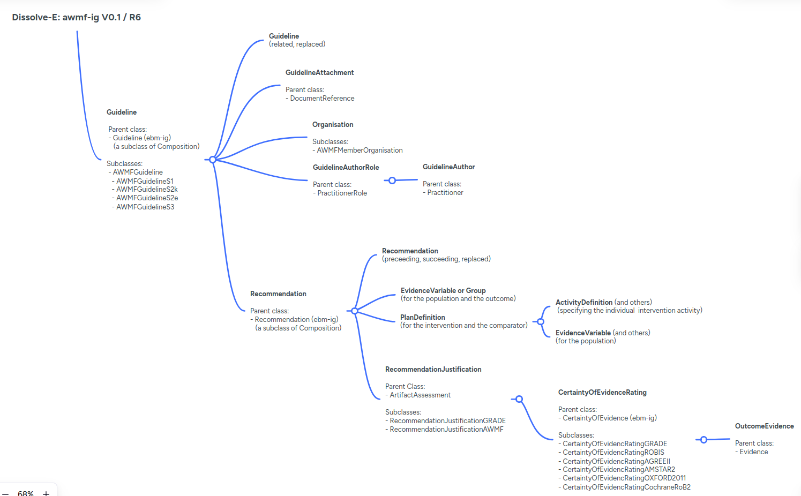

Dissolve-E: FHIR Implementation Guide for the AWMF Guideline Registry
0.1.0 - qa-preview
Dissolve-E: FHIR Implementation Guide for the AWMF Guideline Registry - Downloaded Version 0.1.0 See the Directory of published versions
| Official URL: http://fhir.awmf.org/awmf.ig/ImplementationGuide/awmf.ig | Version: 0.1.0 | |||
| Draft as of 2025-08-06 | Computable Name: AWMFGuidelineRegistryIG | |||
Dissolve-E (Digitization of the AWMF guideline registry for an open, guideline-based, trustworthy evidence ecosystem) aims to digitize the guidelines registry maintained by the Association of the Scientific Medical Societies in Germany (AWMF). This registry plays a crucial role in ensuring quality medical care by providing evidence-based clinical guidelines. However, this registry is currently analog without comprehensive digital version existing yet.
Potential Objectives and Benefits are:
We hereby present the Implementation Guide (IG) developed for DISSOLVE-E based combining the [evidence-based medicine on FHIR (EBMonFHIR)][EMBonFHIR] IG and further defined artifacts to represent evidence-based clinical practice guidelines and recommendations, including the evidence that led to the single recommendations. Additional FHIR artifacts allow to describe the certainty of evidence based on different rating systems or the strength of recommendation, as well as the organizations and persons involved in the guideline process.
This IG is based on FHIR R6 (6.0.0-ballot3).
While DISSOLVE-E is initiated by the AWMF and foremost aiming to develop a digital guidelines registry for Germany, we propose a general profile (Guideline) as well as profiles including AWMF specific requirements.
| Name | FHIR Base Resource | Description |
|---|---|---|
| Guideline | Composition | Representation of a general clinical practice guideline. |
| AWMF Guideline | Composition | Representation of a guideline based on AWMF requirements. |
| AWMF S1 Guideline | Composition | Representation of an AWMF S1 guideline encompassing expert recommendations developed through informal consensus. |
| AWMF S2e Guideline | Composition | Representation of an AWMF S2e guideline based on systematic literature search and evaluation. |
| AWMF S2k Guideline | Composition | Representation of an AWMF S2k guideline based on structured consensus by a representative panel. |
| AWMF S3 Guideline | Composition | Representation of an AWMF S3 guideline based on systematic evidence review and structured consensus by a representative panel. |
| Name | FHIR Base Resource | Description |
|---|---|---|
| Recommendation | Composition | Representation of a clinical practice guideline recommendation. |
We propose different a general profile as well as profiles based on different rating systems.
| Name | FHIR Base Resource | Description |
|---|---|---|
| Evidence Assessment | ArtifactAssesment | Representation of a structured assessment of the certainty of evidence for a specific outcome. |
| Evidence Assessment AGREE II | ArtifactAssesment | Representation of a structured assessment of the quality of guidelines using the AGREE II instrument. |
| Evidence Assessment AMSTAR 2 | ArtifactAssesment | Representation of a structured assessment of the quality of guidelines using AMSTAR 2. |
| Evidence Assessment Cochrane Risk of Bias | ArtifactAssesment | Representation of a structured assessment of risk of bias using Cochrane RoB tool. |
| Evidence Assessment GRADE | ArtifactAssesment | Representation of a structured assessment of the certainty of evidence for a specific outcome, including GRADE rating. |
| Evidence Assessment Oxford 2011 | ArtifactAssesment | Representation of a structured assessment of the certainty of evidence for a specific outcome, including Oxford 2011 rating. |
| Evidence Assessment ROBIS | ArtifactAssesment | Representation of a structure assessment of risk of bias using ROBIS (Risk of Bias in Systematic Reviews). |
We propose a general profile as well as two further profiles based on the GRADE and AWMF rating systems used to describe the strength of recommendation:
| Name | FHIR Base Resource | Description |
|---|---|---|
| Recommendation Justification | ArtifactAssessment | Representation of a structured assessment of the evidence and consensus that underpins a recommendation. |
| Recommendation Justification AWMF | ArtifactAssessment | Representation of a structured assessment of the evidence and consensus that underpins a recommendation, including AWMF rating. |
| Recommendation Justification GRADE | ArtifactAssessment | Representation of a structured assessment of the evidence and consensus that underpins a recommendation, including GRADE rating. |
| Name | FHIR Base Resource | Description |
|---|---|---|
| AWMF Member Organization | Organization | Representation of an organization that is a member of the AWMF. |
| Guideline Author | Practitioner | Representation of a person that authored a guideline. |
| Guideline Author Role | PractitionerRole | Representation of the role of the author of the guideline. |
| Name | FHIR Base Resource | Description |
|---|---|---|
| Guideline Attachment | DocumentReference | Representation of an attachment to a clinical practice guideline. |
The following diagramm provides an overview of the diverse profiles used in this the DISSOLVE-E-IG and their relationship allowing for a structured representation of clinical practice guidelines with accompanying evidence and evidence-to-decision information. The cardinalities shown represent the respective maxima. Please consult the pages of the respective profiles for additional details.

The Ethics Committee of the Berlin chamber of physicians in accordance with its code of conduct §15 section 1 (Eth-KB-24-11) confirmed that no ethical approval is needed for this study.
This project is publicly funded by the Innovation Committee of the Federal Joint Committee (German: Gemeinsamer Bundesausschuss, short: G-BA) for three years (April 2024 to March 2027) with a total of around 2.8 million euros under the grant number: 01VSF23021.